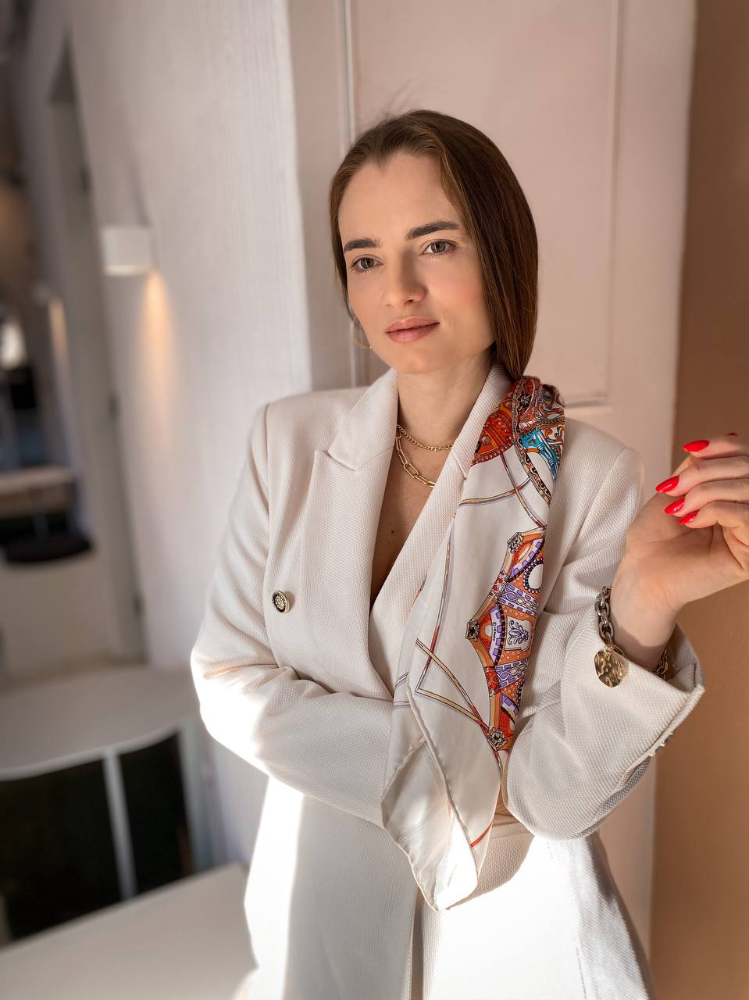
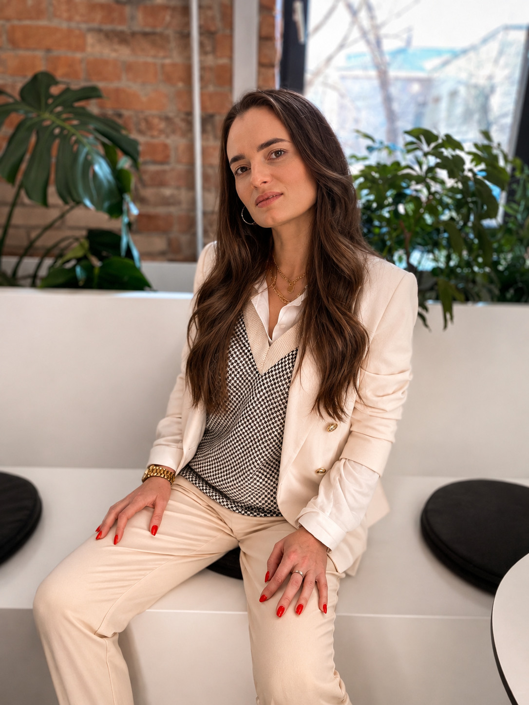
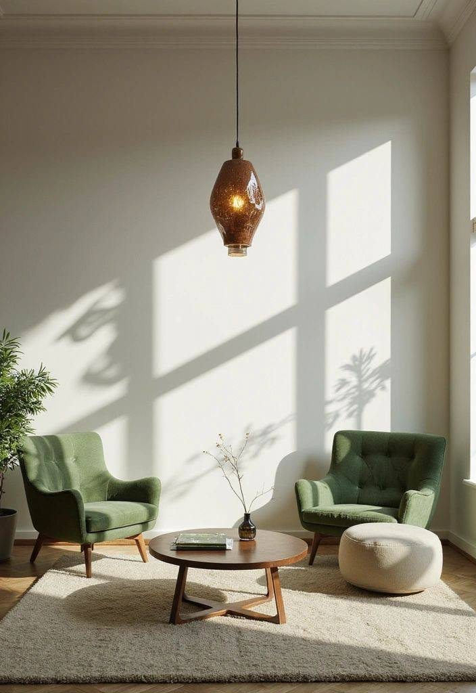
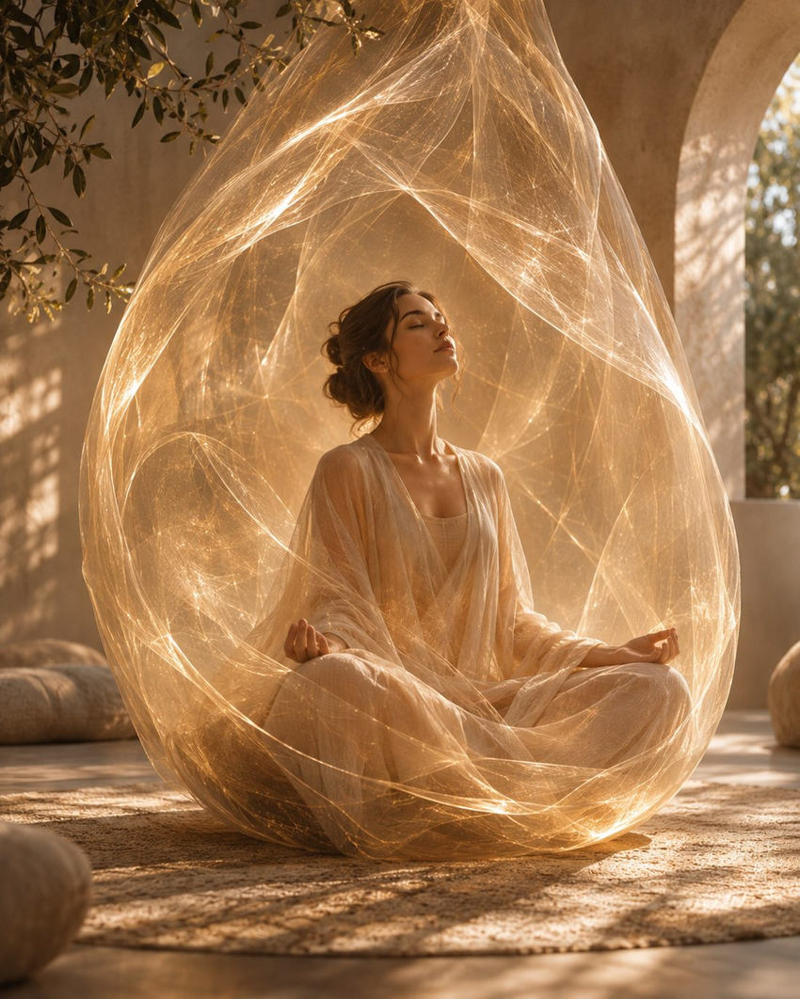
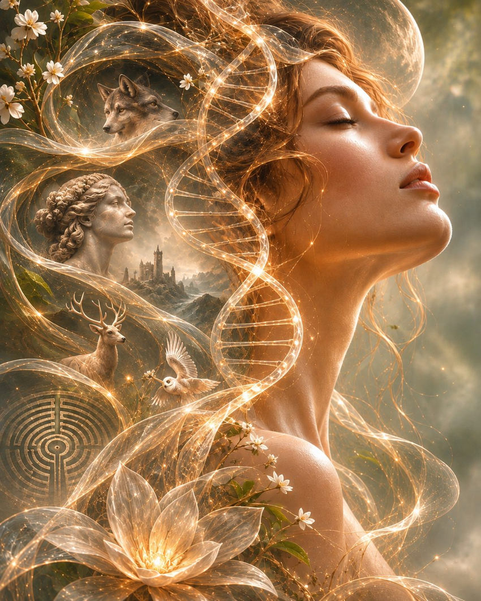
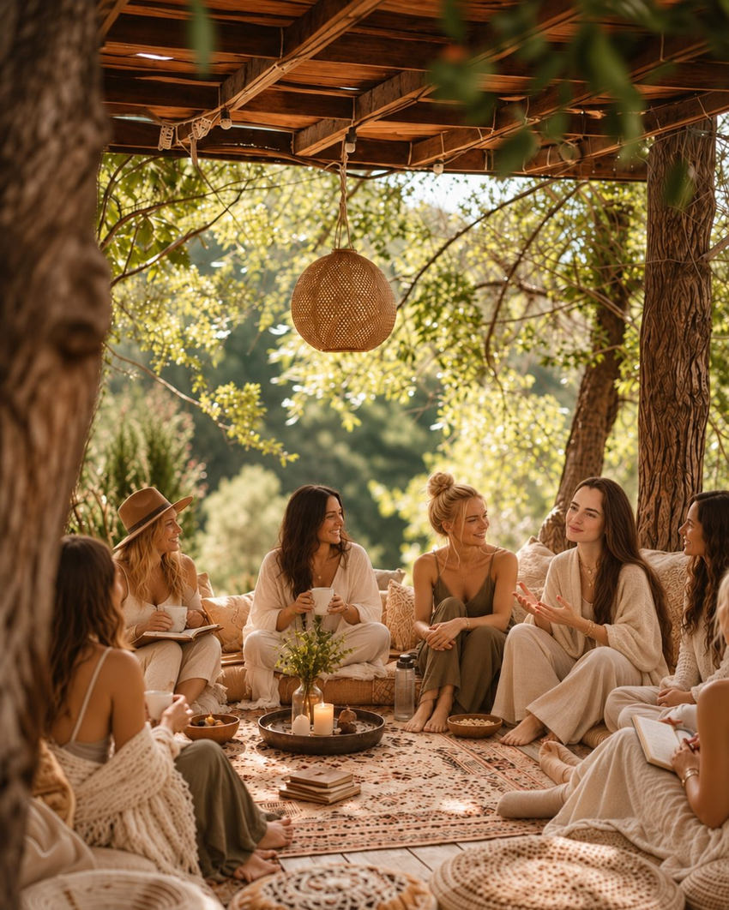

Высшее образование
Алтайский государственный университет · Управление персоналом · 2010
Глубинная работа с личностью и сознанием
За пределами привычного представления о себе. Исследование внутренних процессов, привычных сценариев и возможностей осознанных изменений.


Меня зовут Олеся Павлюкова. Я практический психолог и коуч. Мой профессиональный интерес — человек, его сознание, бессознательные процессы и возможности внутренних изменений.
В своей работе я исследую вместе с человеком привычные убеждения, эмоциональные реакции и жизненные сценарии, а также то, как они влияют на его выбор и отношения с миром.
Я объединяю психологическое консультирование, коучинг, телесно-ориентированные и архетипические инструменты, учитывая индивидуальный запрос.
Для меня важно не подгонять человека под идеал, а помогать ему глубже понимать себя и находить собственные опоры.
Не менять человека под готовый идеал. Помочь ему глубже узнать себя.
Моё образование — сочетание университетской подготовки, профессиональной переподготовки и практики. Здесь представлены основные дипломы; сертификаты по конкретным направлениям можно посмотреть на соответствующих страницах.
Алтайский государственный университет · Управление персоналом · 2010
Экономика и управление бизнесом · АлтГУ · 2013
Профессиональная переподготовка · PSY2.0 · 1100 часов · 2026
Профильные сертификаты PSY2.0 и по коучингу представлены в разделе «Психология и коучинг».
Разные подходы к исследованию внутреннего мира человека. Выберите направление, которое откликается вашему запросу.

Работа с тревогой, эмоциональными состояниями, внутренними конфликтами, отношениями, самооценкой, жизненными сценариями и психосоматическими проявлениями.
Подробнее о направлении →
Метод глубинной работы с внутренними состояниями и восприятием, основанный на концепции «кокона сознания». Направлен на исследование и изменение внутренних образов, эмоциональных реакций и привычных способов восприятия себя и окружающего мира.
Подробнее о направлении →
Архетипические разборы, юнгианская символика и работа с метафорическими образами.
Подробнее о направлении →
Пространство для самоисследования, практик, нового опыта и личностных открытий.
Подробнее о направлении →